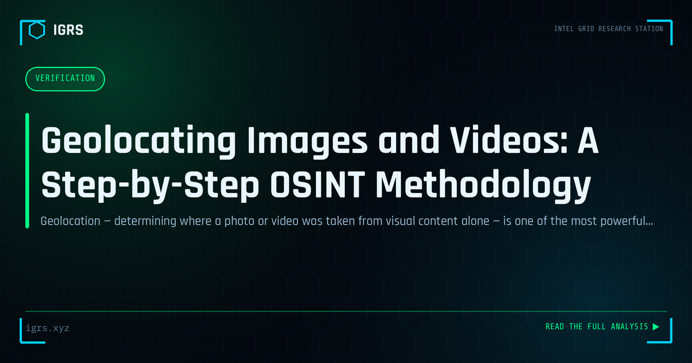

Geolocating Images and Videos: A Step-by-Step OSINT Methodology
| File No. | IGRS-038/2026 |
| Subject | Systematic methodology for geolocation of photographs and video using open-source techniques |
| Category | Verification |
| Author | Manuj Kumar Pandey |
| Published | 2026-06-10 |
| Reading time | 12 minutes |
Geolocation — determining where a photo or video was taken from visual content alone — is one of the most powerful verification skills in modern OSINT. The complete methodology.
Geolocation: Finding Where a Photo Was Taken
Geolocation — determining the precise location where a photo or video was captured — is among the most impressive and valuable OSINT techniques. From verifying news footage to tracking suspects to debunking misinformation, the ability to pinpoint location from visual clues is a powerful investigative capability. This guide covers the complete methodology of OSINT geolocation, from metadata to visual analysis.
The Two Approaches to Geolocation
| Approach | Method |
|---|---|
| Metadata-based | Extract GPS coordinates from EXIF data |
| Visual analysis | Identify location from clues in the image |
When available, EXIF GPS data gives instant, precise location. But since most social media strips metadata, visual analysis — deducing location from what is shown — is the more broadly applicable and impressive skill.
Metadata-Based Geolocation
Many photos embed GPS coordinates in their EXIF metadata. Extracting this with ExifTool or online viewers can immediately reveal exactly where a photo was taken, along with the device, timestamp, and camera settings. However, this only works when metadata is intact — direct downloads from cameras or messaging apps that preserve metadata, rather than social media uploads that strip it.
Visual Geolocation Techniques
When metadata is unavailable, visual clues enable location identification:
- Landmarks — recognisable buildings, monuments, natural features
- Signage — street signs, business names, languages, scripts
- Architecture — building styles characteristic of regions
- Vehicles — license plates, vehicle types, driving side
- Vegetation — plants indicating climate and region
- Infrastructure — utility poles, road markings, signage styles
Geolocation Tools
| Tool | Purpose |
|---|---|
| Google Earth | Satellite imagery and 3D verification |
| Google Street View | Ground-level confirmation |
| Yandex Maps | Strong coverage in some regions |
| SunCalc | Shadow analysis for direction and time |
| Overpass Turbo | OpenStreetMap feature search |
Shadow and Sun Analysis
Shadows are a powerful geolocation and time-verification tool. By analysing the direction and length of shadows, investigators can determine the direction the photo faces and estimate the time of day. Tools like SunCalc model the sun's position for any location and time, allowing verification of whether the shadows in an image are consistent with a claimed location and time — useful for detecting fabricated or miscaptioned content.
Using Reverse Image Search for Geolocation
Reverse image search, especially Yandex, can match an image or its landmarks against indexed photos, suggesting locations. This works well for recognisable places but requires corroboration. Combining reverse image search with manual visual analysis often quickly narrows down a location that can then be confirmed against satellite and street-level imagery.
The Verification Process
Confirming a geolocation follows a rigorous process: identify candidate clues in the image, form a hypothesis about the region, narrow down using distinctive features, and verify by comparing against Google Earth satellite imagery and Street View. The final confirmation matches multiple independent features — building shapes, road layouts, signage positions — against the mapped location, establishing the geolocation beyond reasonable doubt.
Chronolocation: Determining When
Beyond where, geolocation techniques extend to chronolocation — determining when an image was taken. Shadow analysis indicates time of day, vegetation and weather suggest season, and visible events or temporary features (construction, signage, vehicles) can date an image. Combining geolocation and chronolocation establishes both where and when, crucial for verification and investigation.
Geolocation in Investigations
Geolocation serves many investigative purposes: verifying whether footage is from the claimed location and time, establishing a suspect's presence somewhere, debunking misinformation using miscaptioned images, and corroborating or refuting alibis. In an era of rampant visual misinformation, the ability to verify where and when an image was actually captured is an increasingly vital skill.
Building Geolocation Skills
Geolocation is a skill honed through practice. Geolocation challenges and games (like GeoGuessr) build pattern recognition for regional features. Studying how different regions look — their architecture, vegetation, signage, and infrastructure — builds the mental library that enables rapid identification. For Indian investigators, familiarity with regional Indian features, scripts, and infrastructure adds local geolocation capability. Combined with systematic verification, geolocation transforms an ordinary photo into a precise statement of where and when, making it one of OSINT's most compelling and useful techniques.